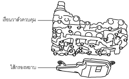

ตะแกรงกรองน้ำมันเครื่อง [FW6A-EL, FW6AX-EL]
id0517h2355300
จุดประสงค์, การทำงาน
• ไส้กรองหยาบจะกรองเศษผงใน ATF โดยการให้ ATF ไหลผ่านกรองที่ติดตั้งภายใน
โครงสร้าง
• ไส้กรองหยาบเป็นแบบกรองผ้าติดตั้งภายในที่ติดตั้งอยู่ที่ตำแหน่งที่แสดงในภาพต่อไปนี้

am3uun00002256